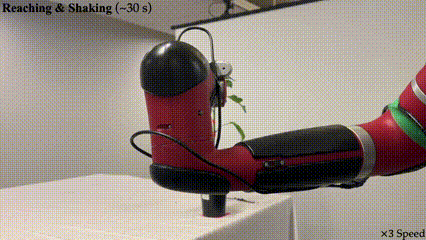
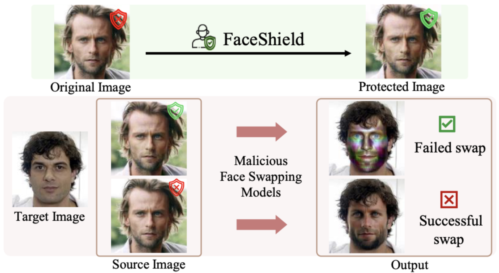

Projects

HiVLA: Path Recovery via VLA and RL
Detecting path deviation via internal attention heads of a frozen VLA model. Local obstacle avoidance RL enables stable navigation and direct path recovery. Full pipeline implemented with ROS2 and LIVO for real-world validation.

AgriChrono: Multi-modal Agricultural Dataset
A multi-modal dataset capturing crop growth and lighting variability with a field robot, supporting research in agricultural AI and long-term scene understanding.

Vision-Guided Robotic Pollination
End-to-end robotic system for autonomous tomato pollination using vision-guided targeted grasping and vibration in controlled greenhouse environments.

FaceShield: Deepfake Defense
A proactive defense framework that protects facial images from deepfake threats by embedding imperceptible adversarial perturbations, disrupting synthesis without visible degradation.